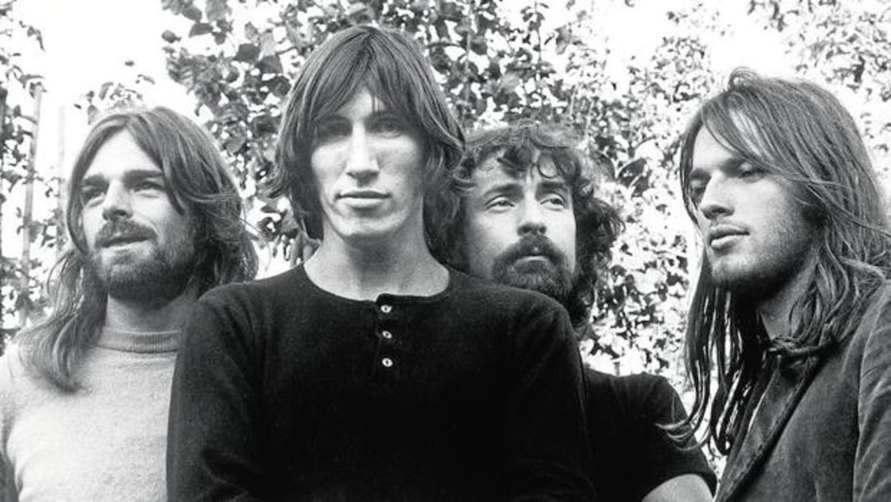
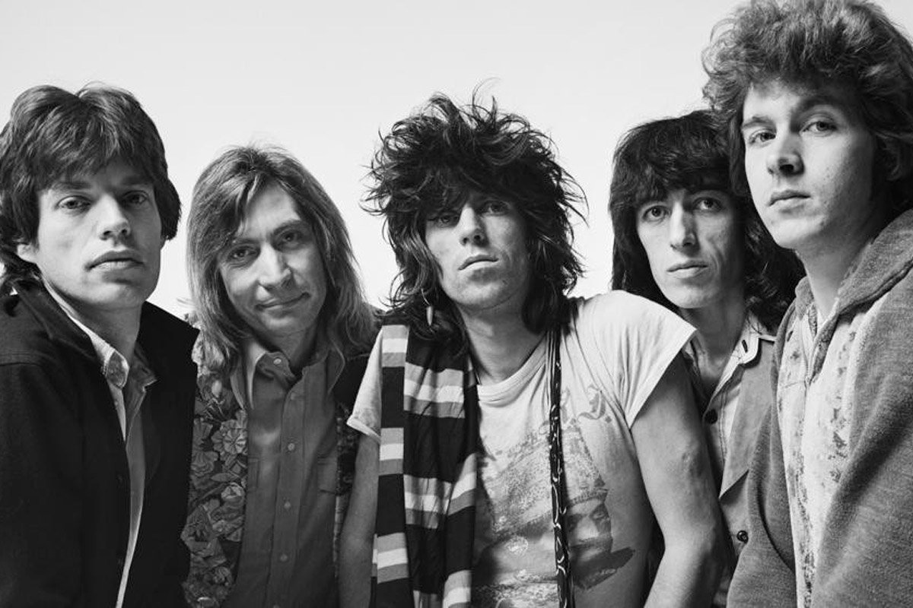

Encontra Tu Banda
Artistas Historicos
Encontra Tu Banda te recomienda artistas historicos que tuvieron mucha influencia en la música. Hoy te presentamos a Led Zeppelin, The Rolling Stones y Pink Floyd, ICONOS DEL ROCK.
Home
Led Zeppelin
Led Zeppelin fue un grupo británico de hard rock fundado en Londres en 1968 por el guitarrista Jimmy Page, quien había pertenecido a The Yardbirds. La banda estuvo integrada por Jimmy Page en la guitarra, John Paul Jones como bajista y tecladista, el vocalista Robert Plant y John Bonham a la batería (que había coincidido con Plant en The Band of Joy). Led Zeppelin presentó elementos de un amplio espectro de influencias y géneros, como el blues, el rock and roll, el soul, la música celta, la música india, el folk, reggae y el country, siendo uno de los grupos seminales para el surgimiento del heavy metal.2 Más de cuarenta años después de la disgregación de la banda en 1980, la música de Led Zeppelin continúa vendiéndose, disfruta de una amplia difusión radiofónica, y ha demostrado ser una de las bandas más influyentes en la música rock. Hasta la fecha, ha vendido más de 300 millones de álbumes en el mundo, incluidos 111 millones solo en los Estados Unidos.3 Es la segunda banda con más discos de diamante de la historia de la música (otorgados cada diez millones de ventas en EE. UU.) con 5, después de The Beatles que tienen 6. Los discos con esta certificación son: Led Zeppelin IV (23 millones), Physical Graffiti (15 millones), Led Zeppelin II (12 millones), Houses of the Holy (11 millones) y Led Zeppelin I (10 millones)4. En 2004, la revista Rolling Stone los clasificó en el número 14 en su lista de los «100 artistas más grandes de todos los tiempos».5

Pink Floyd
Pink Floyd fue una banda de rock británica, fundada en Londres en 1965. Considerada un ícono cultural del siglo XX y una de las bandas más influyentes, exitosas y aclamadas en la historia de la música popular, obtuvo gran popularidad gracias a su música psicodélica, que con el paso del tiempo evolucionó hacia el rock progresivo y el rock sinfónico. Es conocida por sus canciones de alto contenido filosófico, la experimentación sonora, las innovadoras portadas de sus discos y sus elaborados espectáculos en vivo. Sus ventas sobrepasan los 280 millones de álbumes vendidos en todo el mundo,45 97,5 millones de ellos solamente en los Estados Unidos.678 Convirtiéndose en una de las bandas con más ventas en la historia. Inicialmente el grupo estaba formado por el batería Nick Mason, el tecladista y vocalista Richard Wright, el bajista y vocalista Roger Waters y el guitarrista y vocalista principal Syd Barrett, quien se convirtió en el primer líder de la banda tras el efímero paso de Bob Klose, que no llegó a aparecer en ningún disco. El errático e impredecible comportamiento de Barrett, causado por el excesivo consumo de drogas (especialmente LSD),1 hizo que en diciembre de 1967 su amigo David Gilmour se incorporara al grupo. Unos meses después, Barrett abandonó, y con el cuarteto formado por Mason, Wright, Waters y Gilmour quedó establecida la formación definitiva del grupo. La salida de Barrett convirtió a Waters en el principal letrista de la banda, mientras que Gilmour y Wright asumieron el protagonismo en la composición musical. El grupo grabó durante esta época muchos álbumes que se convirtieron en éxitos comerciales extraordinarios, como The Dark Side of the Moon (1973), Wish You Were Here (1975), Animals (1977) y The Wall (1979), discos incluidos, de hecho, entre los más influyentes en la historia de la música popular. Después de las sesiones de grabación de The Wall, el bajista Roger Waters expulsó de la banda al tecladista Rick Wright por discrepancias creativas. En 1983, el grupo lanzó el disco The Final Cut, que no alcanzó el éxito de sus obras anteriores y ni siquiera contó con gira de promoción. Argumentado que la banda estaba agotada y sin ideas, en 1985 Waters declaró la disolución de Pink Floyd. Los miembros restantes, Gilmour y Mason, se negaron a aceptar esta decisión y continuaron con el grupo, por lo cual Waters los demandó reclamando parte de los derechos de la marca Pink Floyd. Waters perdió la demanda ante los tribunales, pero, tras un acuerdo con Gilmour y Mason, obtuvo los derechos exclusivos sobre toda la imaginería que desplegaban en sus conciertos (como su famoso cerdo volador) y sobre el espectáculo audiovisual de The Wall (excepto los tres temas que había compuesto Gilmour: «Young Lust», «Run Like Hell» y «Comfortably Numb»), así como sobre todos los temas incluidos en The Final Cut; a cambio, el resto del grupo podría en lo sucesivo seguir usando sin restricciones el nombre Pink Floyd. Tras superar estos problemas legales, Gilmour y Mason llamaron a Wright para que interveniera, como tecladista contratado, en la grabación de su siguiente trabajo, A Momentary Lapse of Reason. La relación se regularizó en el siguiente álbum, The Division Bell, con Wright ya reintegrado como miembro oficial del grupo, que recuperaba así su configuración clásica. Sin embargo, más tarde Waters se embarcó en una carrera como solista y no volvió a reunirse con sus compañeros sino hasta 24 años después; fue el 2 de julio de 2005, en Londres, en el concierto Live 8, durante el cual se pudieron escuchar las canciones «Speak to Me/Breathe», «Money», «Wish You Were Here» y «Comfortably Numb». En noviembre de 2014 salió a la venta The Endless River, el último disco de estudio de la banda, que contiene sobre todo material grabado durante las sesiones de grabación de The Division Bell entre 1993 y 1994, y sin aportación alguna de Roger Waters.9 En una encuesta realizada por la programa británico de radio Planet Rock en 2005, Pink Floyd fue elegida como la «mejor banda de rock de todos los tiempos».10

The Rolling Stones
The Rolling Stones es una banda británica de rock originaria de Londres. La banda se formó en abril de 19622 por Brian Jones, Mick Jagger, Keith Richards, Bill Wyman, Charlie Watts e Ian Stewart.2 Brian Jones fue despedido en junio de 1969, falleciendo tres semanas después, siendo reemplazado por el guitarrista Mick Taylor, que dejaría el grupo en 1975 y sería a su vez reemplazado por Ronnie Wood. Con el retiro de Bill Wyman en 1993 se incluyó al bajista Darryl Jones que, aunque toca con la banda desde la grabación del álbum Voodoo Lounge en 1994, no es un miembro oficial. Están considerados como una de las más grandes e influyentes bandas de toda la historia del rock,3 siendo una de las agrupaciones que sentó las bases del rock contemporáneo.456 Contando desde sus inicios con el favor de la crítica, algunos de sus materiales están considerados de los mejores de todos los tiempos;78910 entre ellos destacan Beggars Banquet (1968), Let It Bleed (1969), Sticky Fingers (1971) y quizá su mejor obra, Exile on Main St. (1972).nota 1 En 1989 fueron incluidos en el Salón de la Fama del Rock and Roll, y en 2004 la revista estadounidense Rolling Stone los colocó en el puesto n.º 4 en su lista de Los 50 mejores artistas de todos los tiempos.11 Ningún grupo de rock hasta la fecha ha sostenido tan duradera y todavía mundialmente reconocida trayectoria como The Rolling Stones; con Jagger y Richards (Watts hasta 2021) como miembros fundadores en activo, continúan siendo la banda más longeva de la historia del rock.6 Sus primeras producciones incluían versiones y temas de blues, rock and roll y R&B norteamericano. No obstante, en el transcurso de su trayectoria añadieron toques estilísticos de otros géneros para adaptarse a cada época, recibiendo influencias desde la música psicodélica, el country, el punk, la música disco, el soul, el reggae o la música electrónica. Pese a encabezar junto a The Beatles (con los que siempre rivalizaron en popularidad)12 la «invasión británica» en los primeros años de la década de 1960,nota 213 no fue sino hasta el lanzamiento de «(I Can't Get No) Satisfaction» en 1965 cuando alcanzaron el estrellato internacional y se establecieron como una de las bandas más populares en la escena musical.14 A la fecha, la banda ha editado veinticinco álbumes de estudio15 y colocado treinta y dos sencillos dentro de los diez más populares de Reino Unido y los Estados Unidos.16 Las ventas totales de The Rolling Stones se estiman entre 20017 y 250 millones de discos,1819 convirtiéndolos en unos de los artistas más exitosos de todos los tiempos.
